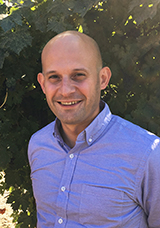
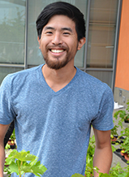
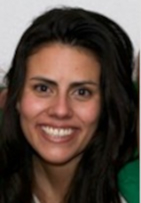
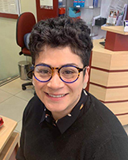
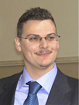
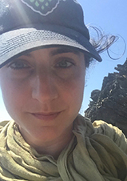
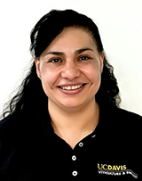
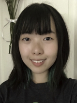

Current Cantu Lab members
Last update: June 6 2018
Dario Cantù
Associate Professor and Louis P. Martini Endowed Chair in ViticultureChancellor's Fellow 2018-2019
Education
2009 PhD Plant Biology, UC Davis
2004 BS-MSc Agricultural Sciences, University of Milan (Italy)
Dario is Associate Professor of Systems Biology and Louis P. Martini endowed chair in viticulture in the Department of Viticulture and Enology at the University of California Davis. He was born and raised in Milan, Italy, where he obtained both his BSc and MSc in Agricultural Sciences. Dario moved to Davis, California, in 2005 to pursue a PhD in Plant Biology at University of California, working on the interaction between Botrytis and ripening fruit. After graduating in 2009 Dario joined the laboratory of Jorge Dubcovksy, where he pioneered the use of next generation sequencing technologies to study the interaction between plants and their associated microorganisms. Since 2012 Dario has been a Faculty member in the Department of Viticulture and Enology at UC Davis, where he leads a research group that studies plant and microbial activities in a variety of contexts, from disease resistance, wood decomposition, to fruit ripening, and flavour development. Dario's Google Scholar Page and ImpactStory

Jerry Lin
PhD Student (Horticulture and Agronomy)Jerry is a PhD student in Horticulture and Agronomy. He received his bachelor’s degrees in Genetics & Plant Biology and Molecular Toxicology at UC Berkeley. In the Cantu lab, he is mapping the genetics bases of viticulture and aroma traits in progenies obtained by crossing important wine grape cultivars. Jerry's Google Scholar Page

Daniela Quiroz
PhD Student (Integrative Genetics and Genomics)Daniela received a MSc in Biotechnology from the National Institute for Agricultural Research (INIA, Chile) in 2015 for her research on long distance gene silencing by artificial miRNAs. Since then she has worked as a researcher in the laboratory of Dr. Humberto Prieto in INIA. Her work involved the development of artificial small RNAs for Vitis vinifera cultivar genetic improvement. In the Cantu lab she is studying the role epigenetic modifications in the grape genome in fungal and viral diseases.

Maria de los Angeles (Micco) Miccono
PhD Student (Horticulture and Agronomy)Micco is a PhD student in Horticulture and Agronomy Graduate Group. She received her bachelor’s degrees in Biochemistry at Universidad de Santiago de Chile. She spent 10 years working on grapevine genetic transformation at the National Institute of Agricultural Research (INIA, Chile) mainly developing plant transformation vectors to generate genotypes that are resistant to fungal and viral diseases. She has also conducted research on CRISPR/Cas9 system implementation in grapevines, stone fruit and apples. In the Cantu Lab, she is investigating the molecular mechanisms that underlie the chemical and developmental changes that berries undergo during the interaction with Botrytis cinerea.
Mélanie Massonnet
PostdocMélanie received her undergraduate bachelor's degree in Plant Physiology from the Université François Rabelais-Tours in France. After a first year of master degree in Plant biology and biotechnologies (Bordeaux, France), she earned a master degree in Enology and Viticulture at the Institut de la Vigne et du Vin (Bordeaux, France) where she conducted research on the functional characterization of grape O-methyltransferases involved in methoxypyrazines biosynthesis in the lab of Pr. Serge Delrot. Then, she joined Pr. Mario Pezzotti’s lab (Università degli studi di Verona, Italy) where she obtained her PhD in Applied biotechnologies, carrying out the berry transcriptome comparison of ten Italian grapevine varieties using RNAseq technology. Since her arrival in 2016 in the Cantu lab, Mélanie has investigated the interaction between grapevine and trunk pathogens and has studied the genomic variability in the Esca pathogen Phaeoacremonium minimum. She is currently reconstructing and comparing the transcriptomes of grape accessions that carry different genetic resistance genes to powdery mildew. Mélanie's Google Scholar Page

Andrea earned a master degree in Bioengineering at Università degli Studi di Padova (Italy) under the supervision of prof. Di Camillo studying the topological properties of gene co-regulatory networks reconstructed by reverse egineering expression profiles. In Prof. Massimo Delledonne's lab he received his Ph.D in Applied Biotechnologies at Università di Verona (Italy) focusing on de novo reconstruction and annotation of genomes and transcriptomes. As bioinformatician in the Cantu Lab, Andrea applies computational methods to sequencing data with the purpose of uncover complex genomic characteristics and lifestyle of grapevine cultivar, fungal phytopathogens and other non model species. Andrea's Google Scholar Page
Andrea Minio
PostdocAndrea earned a master degree in Bioengineering at Università degli Studi di Padova (Italy) under the supervision of prof. Di Camillo studying the topological properties of gene co-regulatory networks reconstructed by reverse egineering expression profiles. In Prof. Massimo Delledonne's lab he received his Ph.D in Applied Biotechnologies at Università di Verona (Italy) focusing on de novo reconstruction and annotation of genomes and transcriptomes. As bioinformatician in the Cantu Lab, Andrea applies computational methods to sequencing data with the purpose of uncover complex genomic characteristics and lifestyle of grapevine cultivar, fungal phytopathogens and other non model species. Andrea's Google Scholar Page

Amanda Vondras
PostdocAmanda received a BS in Biology from Cornell University in 2011 and PhD in Molecular and Cellular Biology from Oregon State University in 2017. As an undergraduate student, she pursued the functional characterization of an enzyme suspected to be involved in norisoprenoid biosynthesis. Her doctoral work included studying uneven berry ripening and the effects of grape leafroll-associated virus 3 on ripening. As a postdoc in the Cantu Lab, she will delve more deeply into this plant-pathogen relationship by exploring how combinations of viral infections influence the severity of symptoms during ripening and alter plant defense responses.
Shahin S. Ali
PostdocShahin received his B.Sc. in Agriculture and M.Sc. in Agricultural Biotechnology from Assam Agricultural University in India and Ph.D. in Biology and Environmental Science from University College Dublin, Ireland. Shahin’s Ph.D. research was on exploiting the molecular interaction between the fungus and plant cell wall during bio-ethanol production. During his short period as a postdoc in Ireland, Shahin studied Fusarium head blight and brassinosteroid mediated plant defense response of wheat and barley. In 2013 he moved to US and join the USDA/ARS Sustainable Perennial Crops Lab in Beltsville, Maryland and started working on the molecular mechanism of disease development and plant defense against various pathogens of cacao. He joined the Cantu lab in early 2018 as part of the ‘Microbial Pathogenomics of Major Cacao Disease’ project and is stationed at ARS Beltsville where he works with Dr. Bryan Bailey. Shahin's Google Scholar Page
Noé Cochetel
PostdocNoé received a B.Sc. in Plant experimentation from the University of Havre, France, in 2011 and a M.Sc. in Plant Biology and Biotechnology from the University of Bordeaux, France, in 2013. He joined the lab of Pr. Serge Delrot for his doctoral work. He studied, under the supervision of Virginie Lauvergeat, the influence of the rootstock on the nitrogen signaling and the development of the scion in grapevine. He received his Ph.D. in Plant Biology from the University of Bordeaux, France, in 2016. In 2017, he joined the lab of Pr. Grant Cramer for his first postdoc where he studied the impact of water deficit on grapevine. For his second and current postdoc, he joined Dario Cantu’s lab and works on comparative genomics of wild north american vitis species. Noé's Google Scholar Page

Rosa Figueroa-Balderas completed her M.S. and Ph.D. in Biochemical Sciences at the Institute of Biotechnology in the National University of Mexico (IBT-UNAM). In 2007, she was awarded a UCMexus-Conacyt postdoctoral fellowship where she developed marker-free transformation technologies to genetically improve California relevant crops at PIPRA/UC Davis. Throughout her postdoctoral training at UC Davis, Rosa designed and built complex plant transformation vectors with maximum freedom-to-operate with the aim of generating marker-free plants. She has collaborated with several Ag-companies designing plant transformation vectors and developing molecular characterization of thousands of independent transformation events with pre-commercial purposes. Rosa has been working in Cantu’s lab since December, 2014 primarily on the development, optimization and implementation of molecular biology protocols for grapevine genomic studies related to grape genetic resistance to Pierce’s disease, powdery mildew and Neofusicoccum parvum, as well as in grape whole genome projects. Rosa's Google Scholar Page
Rosa Figueroa-Balderas
Senior Research ScientistRosa Figueroa-Balderas completed her M.S. and Ph.D. in Biochemical Sciences at the Institute of Biotechnology in the National University of Mexico (IBT-UNAM). In 2007, she was awarded a UCMexus-Conacyt postdoctoral fellowship where she developed marker-free transformation technologies to genetically improve California relevant crops at PIPRA/UC Davis. Throughout her postdoctoral training at UC Davis, Rosa designed and built complex plant transformation vectors with maximum freedom-to-operate with the aim of generating marker-free plants. She has collaborated with several Ag-companies designing plant transformation vectors and developing molecular characterization of thousands of independent transformation events with pre-commercial purposes. Rosa has been working in Cantu’s lab since December, 2014 primarily on the development, optimization and implementation of molecular biology protocols for grapevine genomic studies related to grape genetic resistance to Pierce’s disease, powdery mildew and Neofusicoccum parvum, as well as in grape whole genome projects. Rosa's Google Scholar Page
Jadran García Navarrete
Junior SpecialistJadran received his B.S. in Biotechnology Engineering from the Instituto Tecnológico de Costa Rica in 2017. As an undergraduate student, he worked in his University at the Biotechnology Research Center (CIB) with projects related to synthetic biology. He also worked at the Cantu Lab in 2016-2017 with projects related to the detection of fungal communities from grapevine cuttings of a commercial nurseries using high-throughput sequencing techniques. These projects served as his graduation work. After his degree, Jadran worked for a commercial laboratory where he conducted molecular biology diagnostics on different types of samples. As a junior specialist in Cantu Lab, Jadran will continue his work on diagnostics and ecology of grapevine trunk pathogens.
Lucero (Lucy) Espinoza
Research internLucy is attending UC Davis with the goal of obtaining a degree in Biotechnology (with a specialization in plants). With this degree in Biotechnology, Lucy plans to become a Genetic Engineer that studies and works with tree nuts. Her desire to study tree nuts stems from her interest in food allergies (specifically her own tree nut allergies). As a research intern in the Cantu Lab, Lucy plans to delve into and explore everything the Department of Viticulture and Enology has to offer.

Dingren (Diana) is a current undergraduate at UC Davis, majoring in Global Disease Biology with a concentration in plants. In the future, Diana plans on pursuing research in plant disease control and prevention. Her interest in plants began when she gave a presentation on Aegagropila linnaei and its unique mechanisms. As a research intern in the Cantu lab, Diana aims to learn more about pathogens affecting grape plants and the research process.
Dingren (Diana) Liang
Research internDingren (Diana) is a current undergraduate at UC Davis, majoring in Global Disease Biology with a concentration in plants. In the future, Diana plans on pursuing research in plant disease control and prevention. Her interest in plants began when she gave a presentation on Aegagropila linnaei and its unique mechanisms. As a research intern in the Cantu lab, Diana aims to learn more about pathogens affecting grape plants and the research process.